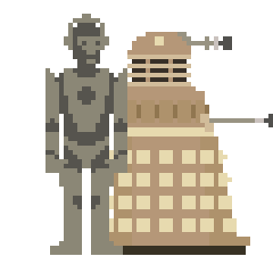

NodeBots
NodeBots
Marina Limeira
Ciência da Computação 
Desenvolvedora 
Mozillian
@marinalimeira_
 Rails Girls Maceió \o/
Rails Girls Maceió \o/
railsgirls.com/maceio
Robótica ★
Eletrônica
Linguagens de Programação de Baixo nível
Matemática
+

Eventos!
// quando o documento estiver pronto
document.on("ready", function(){
// faça alguma coisa legal
});
$\sqrt{(4 - 3)^2 +(5 - 6)^2 + (0 - 5)^2}$
var vector = require('vektor').vector, u, v;
// cria um novo vetor u, onde x = 4, y = 5 e z = 0
u = new v(4, 5, 0);
// cria um novo vetor v, onde x = 3, y = 6 e z = 5
v = new v(3, 6, 5);
// retorna a distância de u para v
u.distanceFrom(v);
node serialport
"I would actually apply the theory of increasing developer happiness from Ruby as the reason to use node.js for building robot PROTOTYPES. It is lightweight, simple, and easy to make complex reactionary systems with little effort."
- Chris Williamsdo not use.
// quando for detectado algum movimento na sala de estar
$("livingroom").bind("motion", function() {
// encontre todas as luzes e defina o brilho como 75%
$(this).find("lights").brightness("75%");
});
github.com/rwaldron/johnny-five/


Ou seja,
Arduino
Componentes Eletrônicos
Johnny-Five
var five = require("johnny-five"), led;
// quando a placa estiver pronta
five.Board().on("ready", function() {
//crie um novo objeto do tipo Led
led = new five.Led(13);
// mande o Led piscar
led.blink(500);
});
blink.js
// variável led com valor 13
int led = 13;
// configuração das portas do Arduino com a porta 13 sendo saída
void setup() {
pinMode(led, OUTPUT);
}
// equivalente a função main
void loop() {
// envia sinal de "ligado" para a porta 13
digitalWrite(led, HIGH);
// espera 500ms
delay(500);
// envia sinal de "desligado" para a porta 13
digitalWrite(led, LOW);
delay(500);
}
blink.c

var five = require("johnny-five"), rgb, index, rainbow;
// quando a placa estiver pronta
five.Board().on("ready", function() {
// crie um novo objeto do tipo Led nas portas 6, 5 e 3
rgb = new five.Led.RGB({pins: [6, 5, 3], isAnode: true});
index = 0;
// array que contem as cores do Led
rainbow = ["red", "orangered", "yellow", "seagreen",
"#2196F3", "royalblue", "rebeccapurple"];
// em um loop que se repete a cada 600ms, faça
this.loop(600, function() {
if (index + 1 === rainbow.length) {
index = 0;
}
// defina a cor do Led como a cor da posição atual do array
rgb.color(rainbow[index++]);
});
});
build-checker
Só posso acender Led?